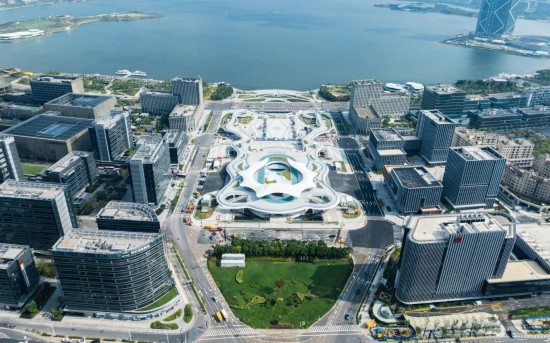
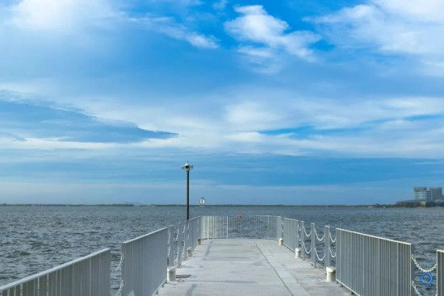

作者：周末跑临港的上海土著 ｜ 编辑：滴水湖畔观察员
前阵子跟朋友约饭，她在临港新片区上班。
吃完她拉我坐16号线回市区，路过滴水湖站的时候，我突然反应过来——我上一次来滴水湖，还是三年前的事。
那时候的印象很单薄：一个巨大的圆湖，湖边没什么像样的店，风一吹人就散了。
这次我专门留了一整天，好好逛了一圈。
图｜临港新地标"荣耀之环"（来源：解放日报/上海发布 孟雨涵摄）
— 01 —
那个"飘浮"在半空中的圆环，年底就要开门了
最先撞见的是金融湾的"荣耀之环"。
之前只在效果图上看过，这次亲眼——怎么说呢，真的很像一只倒扣在楼顶上的金色飞碟。
高50米，架在四栋高楼的顶端，圆环本身是透明的，据说内部有一条全玻璃的观景通道。站在上面，滴水湖全景和东海海岸线能同时装进眼里——这可能是上海第一个，同时能"看湖又看海"的城市观景台。
官方说建筑主体今年1月就完工了，正在做最后的内部装修，计划明年春节前后对公众开放。整个金融湾片区还有89万平米的商业空间，地下通道已经打通，等它开门，临港的市中心就真的"立"起来了。
✦ 实用信息：目前荣耀之环本身不对外开放，周边的金融湾沿街商铺已有部分开业。
— 02 —
地铁16号线——出站就能"看海"

图｜地铁16号线滴水湖站二楼平台（来源：上海发布/上海市文旅局）
从市区坐16号线过来，终点站就是滴水湖站。
出闸机上到二楼平台，眼前突然炸开一片蓝——真的像大海。湖的面积接近杭州西湖，风从湖面吹过来，带着水汽，跟市区的风完全不是一个味道。
我特意绕到车站的另一侧，能看到整个湖的圆形轮廓，像被什么东西精准地画了一个圈。据说这是国内最大的人工湖，引的是东海的水。
一个冷知识：滴水湖的设计其实是"水滴形"，不是正圆形。当初挖的时候是按一颗落入湖面的水滴的形状来的，所以北岸稍微尖一点，南岸圆润。站在金融湾那一侧拍照，才能看出完整的水滴感。
✦ 实用信息：地铁16号线直达滴水湖站，车程约1小时20分钟（从龙阳路起）。出站后步行5分钟到湖边。
— 03 —
壹号码头 · 工业风的湖岸出片地

图｜滴水湖壹号码头（来源：上海发布/Hi临港）
离开地铁口，沿着环湖路往北走，大约10分钟就到壹号码头。
半开放式的伞状钢结构，水泥质感的阶梯和观景台，工业风拉满。站在上面拍湖面，蓝得很清透，不像人工湖，倒像把一片海搬进了上海。
码头边上有家叫"壹福·li"的湖景餐厅，粗犷的原木桌配大落地窗，窗外就是湖水。我去的时候是下午三点，阳光斜着打进来，靠窗的位置全坐满了。
更意外的是——Manner Coffee滴水湖店就在码头旁边。这家店号称"最孤独的Manner"，几何造型的白色建筑从湖边"长"出来，像一座小型美术馆。推门进去就是橙色的座椅和热带绿植，反差感拉满。
✦ 实用信息：壹号码头免费开放，地址在浦东新区环湖北一路26号。Manner和壹福餐厅都在同一个园区。
— 04 —
不止湖边咖啡，还有运动中心正在破土
但临港的变化，远不止这些"网红打卡点"。
我特意查了下最新的规划——滴水湖运动中心（一期工程）今年9月刚拿到开工许可。位置在滴水湖东北岸，靠近临港大道那一片。
这个运动中心规模不小：体育场、游泳馆、篮球馆、羽毛球馆、网球中心……光主体育场就能坐3万人，以后说不定能在这里开演唱会或者做业余联赛。
加上已经建好的耀雪冰雪世界、海昌海洋公园、上海海昌天文馆，临港正在把"周末一天游"变成"可以留下来过夜甚至定居"的样子。
国庆那场"山河月宴"美食生活节，来了超过5万人。40多个摊位沿着湖边排开，全国美食、潮玩手作、青年交友、甚至高薪岗位招聘会都搞在一起——"吃喝玩乐、脱单、求职一站式搞定"，这个口号不是空的。
你看，年轻人真的开始留下来了。不是来拍张照就走，而是开始在这里找工作、交朋友、过日子。
这座"年轻的城"
正在悄悄长出它的血肉
下次如果朋友约饭在临港，
别再嫌远了——
留一天给自己，好好逛一逛。
你最近去过滴水湖吗？
有什么私藏的好去处？
评论区聊聊～点赞在看的朋友们
下次临港活动我们组团一起去！
本文部分信息参考：解放日报、上海发布、临港管委会官网
配图来源已在每张图注中标明
如有活动信息变动，请以官方公告为准